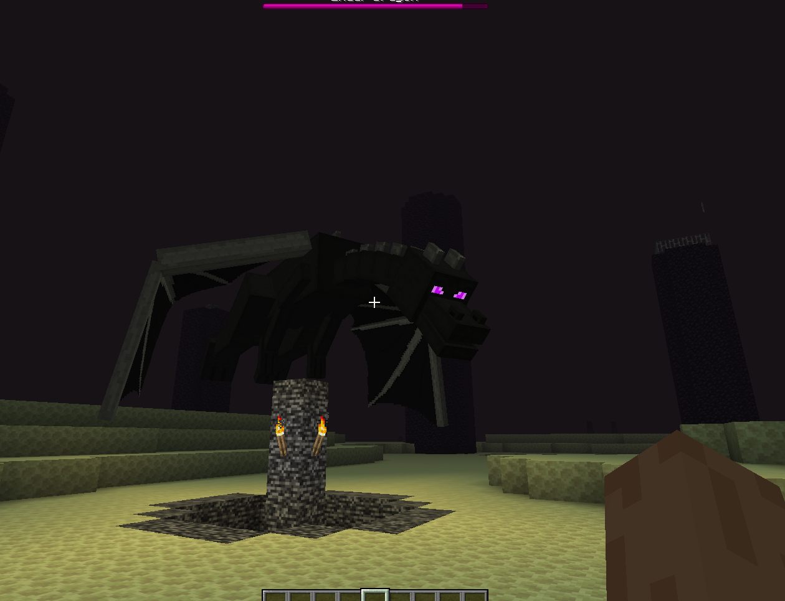

After entering the the obsidian pillars. A bow is the safest way to destroy them from a distance.
Once all crystals have been destroyed, the Ender Dragon will no longer be able to heal. Wait for the dragon to perch at the center portal and attack it with your sword whenever it lands.
Be careful not to look directly at Endermen unless you intend to fight them. The dragon can also launch players into the air, so hay bales or water buckets can help reduce fall damage.
Repeat the process until the Ender Dragon's health reaches zero. Once defeated, use the End Portal to return home and complete the game.